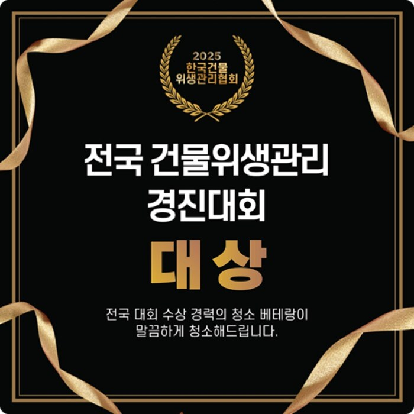

2025년 전국 건물위생관리 기능경진대회 대상 수상
2025년 국제청소위생방역산업전에서 대상 수상으로 기술력과 전문성을 인정받았으며, 단순한 청소를 넘어 체계적인 매뉴얼과 숙련된 인력, 고객 중심 서비스를 바탕으로 고품질의 작업을 진행합니다. “청소는 기술입니다”라는 신념 아래, 현장에서 실력으로 신뢰를 쌓아가고 있습니다.
(주)그린죤은 15년 경력의 청소·소독 전문기업으로, 경남·부산 전 지역에서 바닥청소, 방역소독, 건물관리 등 다양한 서비스를 제공합니다.
2025년 대상 수상 게시글 보기